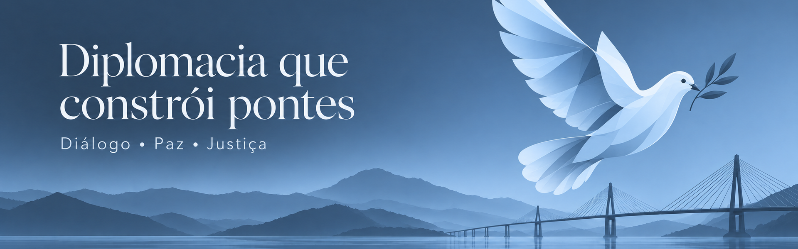

Conhecendo o site
Este site é um portal de aprendizado prático e acessível, diretamente inspirado no Objetivo de Desenvolvimento Sustentável 16 da ONU (Paz, Justiça e Instituições Eficazes).
Nossa missão é descomplicar a história e a geopolítica para estudantes: aqui você explora análises sobre as grandes guerras, os bastidores das negociações
diplomáticas e os acordos que moldaram o mapa global.
Mais do que narrar o passado, trazemos à tona as problemáticas centrais dessas crises, como as falhas no diálogo, a violação de direitos e as disputas de poder,
mostrando de forma direta como esses conflitos históricos e escolhas diplomáticas continuam gerando impactos, tensões e desafios no nosso dia a dia.